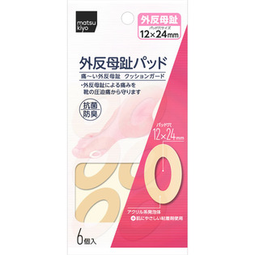
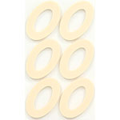

返回列表
产品名称：matsukiyo ウオノメパッド 外反母趾用

横山製薬 matsukiyo ウオノメパッド 外反母趾用 ６個入
メーカー 横山製薬
JANコード 4987365044077
商品の特徴
痛～い外反母趾 クッションガード
・外反母趾による痛みを靴の圧迫痛から守ります
抗菌防臭
アクリル系発泡体
成分・分量
用法及び用量
＜用途＞
外反母趾によって起こる親指のつけ根の痛みを靴の圧迫痛や摩擦から守ります。
＜使用方法＞
足をきれいに洗い、よく乾かしてから親指のつけ根の突起して痛い部分がパッドの穴の中央になるように直接皮膚に貼ってください。